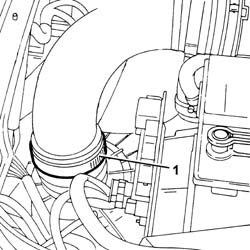
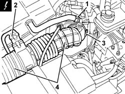
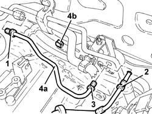
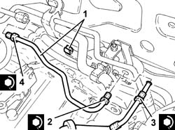
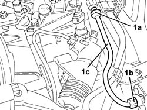
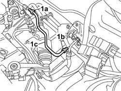

1820B51 rigid input pipe to vibration damper - r r for rhd versions
- Path
- Procedures > 18 CLUTCH > 1820 CLUTCH RELEASE CONTROLS > 1820B HYDRAULIC CLUTCH SYSTEM > 1820B51 rigid input pipe to vibration damper - r r for rhd versions
- Kind
- repair procedure (removal / refitting; the operation number is the code)
- Applies to
- engines: 1.6 TS , 1.8 TS, 2.5 V6, 3.2 V6, 2.4 JTD 10v; all production periods
- Interactive page
- https://sloeber94.github.io/elrnDB-a156/en/#/3237904
Applies to: engines: 1.6 TS , 1.8 TS; all production periods; only with equipment: Right hand drive
 Removing
Removing
 Refitting
RefittingEnsure that the ignition key is in OFF position, then disconnect the negative battery terminal.
 | Name | Connector |
|---|---|---|
- | Battery |
Drain the brake-clutch fluid from the reservoir using a suitable syringe.
1. Loosen the collar securing the sleeve to the air cleaner.

Applies to: engines: 1.6 TS , 1.8 TS; all production periods; only with equipment: Right hand drive
1. Disconnect the oil vapour recovery pipe from the sleeve leading from flow meter to chamber.
2. Disconnect the electrical connection from the air flow meter.
| Name | Connector |
|---|---|---|
2 | Air flow meter |
3. Loosen the collar securing the sleeve from flow meter to chamber, chamber side.
4. Remove the hoses from the air filter to the air chamber, complete with air flow meter.

Applies to: engines: 1.6 TS , 1.8 TS; all production periods; only with equipment: Right hand drive
5530B52 Battery DRIP TRAY/SUPPORT - R.R. .
1. Undo the connector and disconnect the vibration damper rigid inlet pipe, master cylnder outlet pipe side.
2. Undo the connector and disconnect the pipe from the vibration damper to the slave cylinder, damper side.
3. Undo the connector and disconnect the vibration damper rigid inlet pipe, damper side.
4. Remove the inlet pipe to vibration damper (4a) after releasing it from the collar (4b).

Applies to: engines: 1.6 TS , 1.8 TS; all production periods; only with equipment: Right hand drive
Refitting
Removing1. Place the vibration damper inlet pipe back in its housing and secure it using the band.
2. Connect the vibration damper inlet pipe, damper side and tighten the connector to the recommended torque.
 | Fastening | Component | Ø | Value (daNm) |
|---|---|---|---|---|
2 | Connector | RIGID INLET PIPE TO VIBRATION DAMPER | M12 | (Damper side) 1.7 - 1.9 |
3. Connect the pipe from the vibration damper to the slave cylinder, damper side and tighten the connector to the recommended torque.
| Fastening | Component | Ø | Value (daNm) |
|---|---|---|---|---|
3 | Connector | HOSE TO CLUTCH HYDRAULIC ACTIVATOR | M12 | (Damper side) 1.7 - 1.9 |
4. Connect the vibration damper rigid inlet pipe, master cylinder outlet pipe side and tighten the connector to the recommended torque.
| Fastening | Component | Ø | Value (daNm) |
|---|---|---|---|---|
4 | Connector | RIGID INLET PIPE TO VIBRATION DAMPER | M12 | (Pipe from master cylinder side) 1.7 - 1.9 |

Applies to: engines: 1.6 TS , 1.8 TS; all production periods; only with equipment: Right hand drive
5530B52 Battery DRIP TRAY/SUPPORT - R.R. .
Refit in their seatings the hoses from the air filter to the air chamber complete with air flow meter, and tighten the relevant bands.
Connect the electrical connection to the air flow meter.
Connect the oil vapour recovery pipe hose from flow meter to chamber.
1820B08 Clutch release HYDRAULIC SYSTEM - Bleeding air and restoring level .
Connect the negative (-) battery terminal.
Applies to: engines: 2.5 V6; all production periods; only with equipment: Right hand drive
Removing
Refitting5530B52 Battery DRIP TRAY/SUPPORT - R.R. .
Drain the brake-clutch fluid from the reservoir using a suitable syringe.
1. Undo fittings (1a) and (1b) and remove the rigid inlet pipe to the vibration damper (1c).

Applies to: engines: 2.5 V6; all production periods; only with equipment: Right hand drive
Refitting
RemovingPlace the rigid inlet pipe to the vibration damper and tighten the fittings to torque.
| Fastening | Component | Ø | Value (daNm) |
|---|---|---|---|---|
- | Connector | RIGID INLET PIPE TO VIBRATION DAMPER | M12 | (Intermediate connector side) 1.4 ÷ 2.2 |
| Fastening | Component | Ø | Value (daNm) |
|---|---|---|---|---|
- | Connector | RIGID INLET PIPE TO VIBRATION DAMPER | M12 | (Vibration damper side) 1.4 ÷ 2.2 |
1820B08 Clutch release HYDRAULIC SYSTEM - Bleeding air and restoring level .
Applies to: engines: 2.4 JTD 10v; all production periods; only with equipment: Right hand drive
Removing
Refitting5530B52 Battery DRIP TRAY/SUPPORT - R.R. .
Drain the brake-clutch fluid from the reservoir using a suitable syringe.
1. Undo fittings (1a) and (1b) and remove the rigid inlet pipe to the vibration damper (1c).
Applies to: engines: 2.4 JTD 10v; all production periods; only with equipment: Right hand drive
Refitting
RemovingPlace the rigid inlet pipe to the vibration damper and tighten the fittings to torque.
| Fastening | Component | Ø | Value (daNm) |
|---|---|---|---|---|
- | Connector | RIGID INLET PIPE TO VIBRATION DAMPER | M12 | (Intermediate connector side) 1.4 ÷ 2.2 |
| Fastening | Component | Ø | Value (daNm) |
|---|---|---|---|---|
- | Connector | RIGID INLET PIPE TO VIBRATION DAMPER | M12 | (Vibration damper side) 1.4 ÷ 2.2 |
1820B08 Clutch release HYDRAULIC SYSTEM - Bleeding air and restoring level .
Applies to: engines: 3.2 V6; all production periods
Removing
Ensure that the ignition key is in the OFF position, then disconnect the negative battery terminal (-).
| Name | Connector |
|---|---|---|
- | Battery |
5530B52 Battery DRIP TRAY/SUPPORT - R.R.
1048A28 vacuum air circuit resonator pipe - r+r
1048A48 throttle heater sleeve - r r
Drain the brake-clutch fluid from the reservoir using a suitable syringe.
1. Undo fittings (1a) and (1b) and remove the rigid inlet pipe to the vibration damper (1c).

Applies to: engines: 3.2 V6; all production periods
Place the rigid inlet pipe to the vibration damper and tighten the fittings to torque.
| Fastening | Component | Ø | Value (daNm) |
|---|---|---|---|---|
- | Connector | RIGID INLET PIPE TO VIBRATION DAMPER | M12 x 1 | (Rigid pipe from master cylinder side) 1.8 |
| Fastening | Component | Ø | Value (daNm) |
|---|---|---|---|---|
- | Connector | RIGID INLET PIPE TO VIBRATION DAMPER | M12 x 1 | (Vibration damper side) 1.8 |
1048A48 throttle heater sleeve - r r
1048A28 vacuum air circuit resonator pipe - r+r
5530B52 Battery DRIP TRAY/SUPPORT - R.R.
- 0010T64 brake and or clutch fluid check level and top up as necessary
0010T65 hydraulic brake system bleed air
0010T67 hydraulic clutch system bleed air
Connect the battery/timing unit terminal (-)
Topics linked from this page (9)
- 0010T65 hydraulic brake system bleed air
- 0010T67 hydraulic clutch system bleed air
- 1048A28 vacuum air circuit resonator pipe - r+r
- 1048A48 throttle heater sleeve - r r
- 1820B08 Clutch release HYDRAULIC SYSTEM - Bleeding air and restoring level
- 5530B10 battery - r+r
- 5530B52 Battery DRIP TRAY/SUPPORT - R.R.
- A1B Battery ( BATTERY NEGATIVE )
- K41 Air flow meter ( ENGINE )